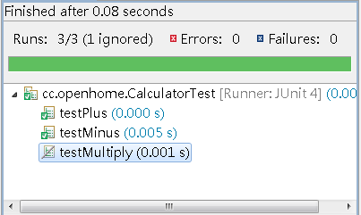

|
|
在 使用 JUnit 4.x 中已經介紹了JUnit 4中定義測試類別的大部份作法，在這邊再介紹更多的作法。首先來看到@Test的其它設定。在 關於 TestCase 中，曾經談到使用fail()來提醒測試者，某些測試尚未完成： public void testABC() {
fail("單元測試尚未撰寫"); } 在JUnit 4中，可以使用@Ignore來標註某個測試尚未撰寫完畢，或因某些原因必須暫時忽略： @Ignore("Calculator 尚未定義 multiply") @Test public void testMultiply() { } 在執行測試後，被忽略的測試方法會被標示出來。例如在Eclipse中的畫面如下：  在 關於 TestCase 中也提過，可使用fail()來測試預期會丟出例外的情況： public void testSomeException() {
try { some.doSome("somValue"); // 應該丟出例外 fail("沒有如預期丟出例外"); } catch(SomeException ex) { // 什麼都不作 } } 現在可以簡單地指定@Test的expected屬性來執到相同的功能： @Test(expected = SomeException.class)
public void testSomeException() { some.doSome("somValue"); // 應該丟出例外 } 如果你預期某些操作應該在指定的時間到達前完成，否則測試失敗，這可以指定@Test的timeout屬性來作到，單位是毫秒。例如下例若執行超過兩秒則測試失敗： @Test(timeout = 2000)
public void testSome() { some.doSome(); } 在 使用 JUnit 4.x 中談過，可以使用@Before、@After指定測試方法前後要執行的方法，事實上，若你願意，@Before、@After也可以多次指定，所有標註的方法都會在測試前或後執行： @Before
public void setUpSome() { //... } @Before public void setUpOther() { //... } 如果你有些設備，必須以測試類別為單位執行，則可以使用@BeforeClass、@AfterClass，標註測試類別中全部測試方法執行前、後所要進行的動作。 @BeforeClass
public static void setUpBeforeClass() { ... } @AfterClass public static void tearDownAfterClass() { ... } 附帶一題的是，JUnit 4的預設runner是org.junit.runners.JUnit4，其繼承架構為：
Runner
|ParentRunner |BlockJUnit4ClassRunner |JUnit4 實際上JUnit4繼承BlockJUnit4ClassRunner之後，並沒有定義任何新的方法： ...
public final class JUnit4 extends BlockJUnit4ClassRunner { public JUnit4(Class<?> klass) throws InitializationError { super(klass); } } 若使用JUnitCore這個Facade，後續執行流程中，會使用org.junit.internal.builders.JUnit4Builder的runnerForClass()，將指定的測試類別Class實例傳給BlockJUnit4ClassRunner建構之用： ...
public class JUnit4Builder extends RunnerBuilder { @Override public Runner runnerForClass(Class<?> testClass) throws Throwable { return new BlockJUnit4ClassRunner(testClass); } } 所以實際上內部所使用的是org.junit.runners.BlockJUnit4ClassRunner，JUnit4只是作為未來修改的彈性，如果未來內部不再使用BlockJUnit4ClassRunner，那麼JUnit4繼承的對象也會作出修改，但客戶端不受影響。 繼續探查BlockJUnit4ClassRunner、ParentRunner與TestClass類別，可發現你所指定的測試類別Class實例，最後會來建立TestClass實例，這是一個輔助類別，可運用反射取得類別的標註（Annotation）等各項資訊，BlockJUnit4ClassRunner會取得TestClass實例，建立你指定的測試類別實例並執行測試。 BlockJUnit4ClassRunner是目前JUnit 4實現測試的方式，其名為Block，是因為它將要進行的測試，以Statement block為單位作區分，例如說，@Before、@After所標註的方法，大致而言可視為Statement block，所有的Statement block最後會串接在一起，每個Statement block各負責某個測試職責，實現了 Chain of Responsibility 模式。 |